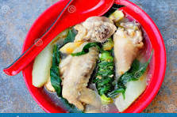

Tinolang Manok
Home

Ingredients
- 1 whole chicken (about 2 lbs), cut into serving pieces
- 1 tablespoon vegetable oil
- 1 large onion, chopped
- 3 cloves garlic, minced
- 1 thumb-sized ginger, julienned
- Fish sauce (patis) to taste
- Water
- 2 green papayas, peeled, seeded, and cut into wedges
- 1 bunch of chili leaves (dahon ng sili) or spinach
- Salt and pepper to taste
Steps
- Heat the vegetable oil in a large pot over medium heat.
- Sauté the onion, garlic, and ginger until fragrant.
- Add the chicken pieces and cook until lightly browned.
- Pour in enough water to cover the chicken. Bring to a boil.
- Add fish sauce to taste. Reduce heat to low and simmer for about 20-30 minutes, or until the chicken is tender.
- Add the green papaya wedges and cook until tender.
- Add the chili leaves or spinach and cook for a few more minutes until wilted.
- Season with salt and pepper to taste.
- Serve hot with rice.